Dual VTT
Una mesa virtual gratuita para Daggerheart que instalas en tu equipo. Tú diriges desde casa y tus jugadores entran con un enlace. A free Daggerheart virtual tabletop you run on your own computer. You host from home; your players join with a link.
Código abierto (MIT). Daggerheart™ Compatible. Español e inglés. Open source (MIT). Daggerheart™ Compatible. English and Spanish.
Nueve pasos, de la clase a las conexiones Nine steps, from class to connections
El asistente sigue el SRD paso a paso: clase y subclase, herencia, rasgos, equipo, trasfondo, experiencias y cartas de dominio. Cada elección se muestra como una carta ilustrada, y el borrador se guarda solo hasta que terminas. The wizard follows the SRD step by step: class and subclass, heritage, traits, equipment, background, experiences and domain cards. Every option is an illustrated card, and the draft saves itself until you finish.
- Arcana
- FiloBlade
- HuesoBone
- CódiceCodex
- PavorDread
- GraciaGrace
- MedianocheMidnight
- SabioSage
- EsplendorSplendor
- ValorValor
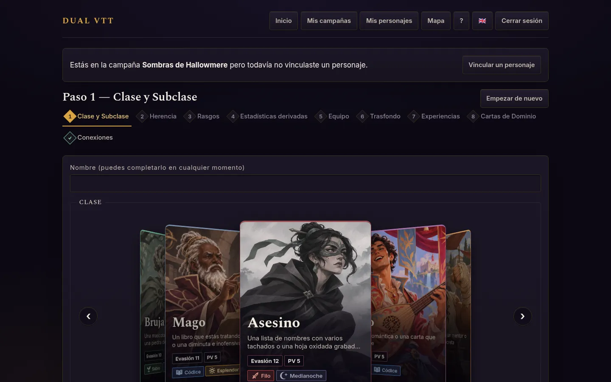
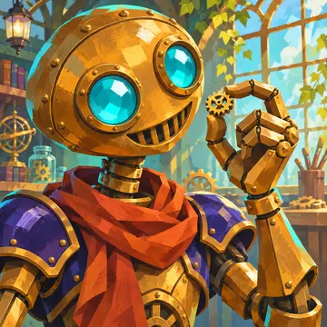
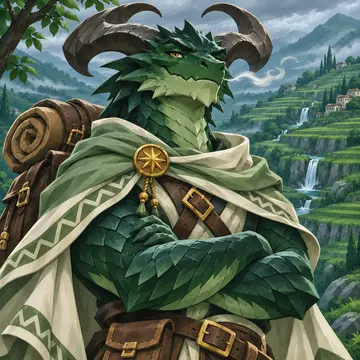
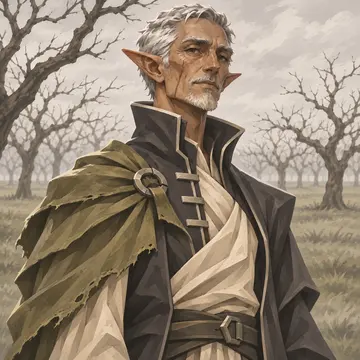
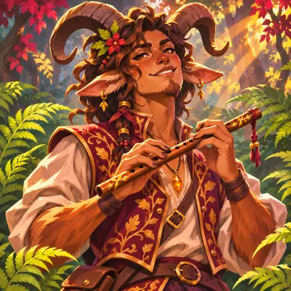
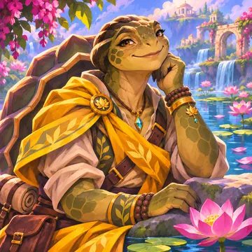
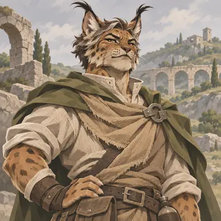
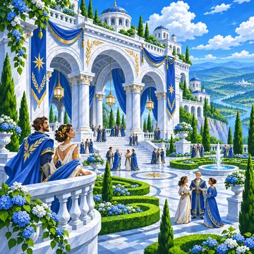
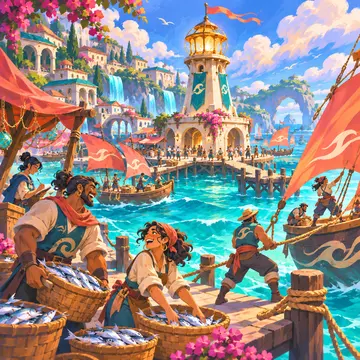
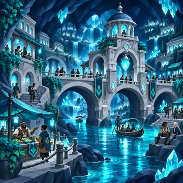
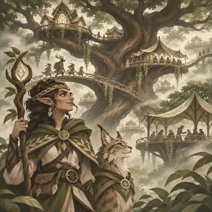
Lo que ve el DJ. Lo que ven los jugadores. What the GM sees. What the players see.
La niebla, las fichas ocultas y las regiones secretas se filtran en el servidor. Lo que no está revelado nunca llega al navegador de un jugador. Fog, hidden tokens and secret regions are filtered on the server. Anything unrevealed never reaches a player's browser.
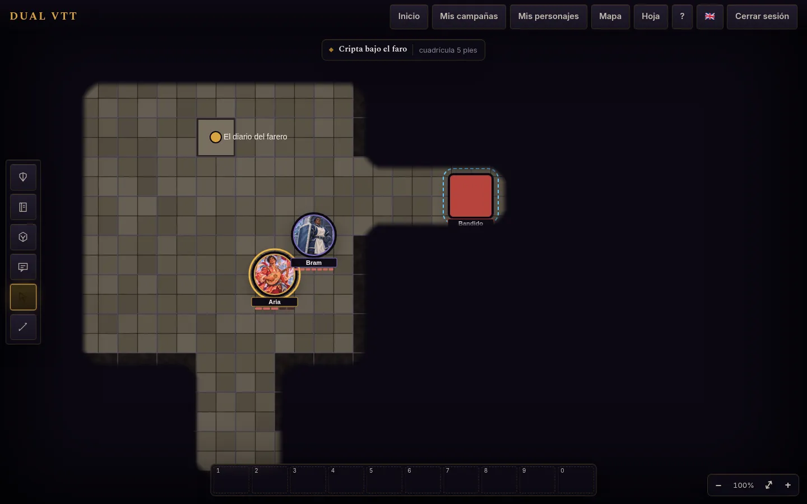
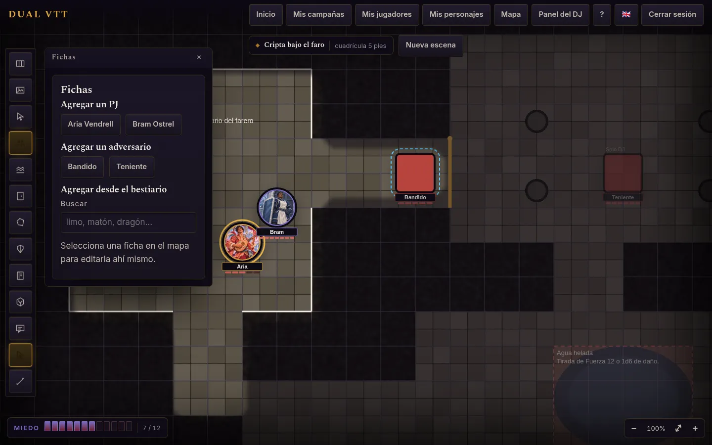
DJGM JugadorPlayerTodo lo que hay en la mesa Everything on the table
Durante la partidaAt the table
- Las tiradas se hacen en el servidor, con una semilla por campaña: nadie las maquilla y el registro se puede auditar.Rolls happen on the server from a per-campaign seed: nobody fudges them and the log can be audited.
- Dados 3D en pantalla y una bandeja para tiradas sueltas.3D dice on screen and a tray for loose rolls.
- Esperanza en cada ficha y el contador de Miedo del DJ, siempre a la vista.Hope on every sheet and the GM's Fear track, always in view.
- Chat con susurros y tiradas privadas que solo ven sus destinatarios y el DJ.Chat with whispers and private rolls seen only by their audience and the GM.
- Objetivos marcados en el mapa y pings para señalar un punto.Targets marked on the map and pings to point at a spot.
- Música sincronizada: quien entra a mitad de canción oye el mismo momento.Synced music: whoever joins mid-song hears the same moment.
- Tablas aleatorias del DJ, foco, cuentas atrás y adversarios del bestiario.GM random tables, spotlight, countdowns and adversaries from the bestiary.
En el mapaOn the map
- Escenas con imagen propia, fichas con retrato y distancias en las bandas de alcance de Daggerheart. La cuadrícula es opcional.Scenes with your own image, portrait tokens and distances in Daggerheart's range bands. The grid is optional.
- Niebla de guerra a pincel, o calculada desde los muros según lo que ve cada ficha.Fog of war by brush, or computed from walls by what each token can see.
- Muros y puertas que bloquean la visión y la luz.Walls and doors that block vision and light.
- Regiones de terreno difícil, peligros y notas que avisan al DJ cuando alguien entra.Regions for difficult terrain, hazards and notes that tell the GM when someone walks in.
- Diario de campaña con entradas compartidas o solo para el DJ, y notas en el mapa que lo abren.A campaign journal with shared or GM-only entries, and map pins that open them.
Entre sesionesBetween sessions
- Ficha interactiva: daño contra umbrales, subida de nivel, descansos y exportación a PDF.An interactive sheet: damage against thresholds, level up, downtime and PDF export.
- Cada jugador tiene su biblioteca de personajes en el servidor, disponible desde cualquier dispositivo.Each player keeps a character library on the server, reachable from any device.
- El DJ gestiona sus campañas (activas, en pausa o terminadas): historia, notas, monstruos preparados y jugadores invitados.The GM manages campaigns (active, paused or finished): story, notes, prepared monsters and invited players.
- Interfaz y contenido del SRD en español e inglés, con ayuda y compendio integrados.Interface and SRD content in Spanish and English, with built-in help and compendium.
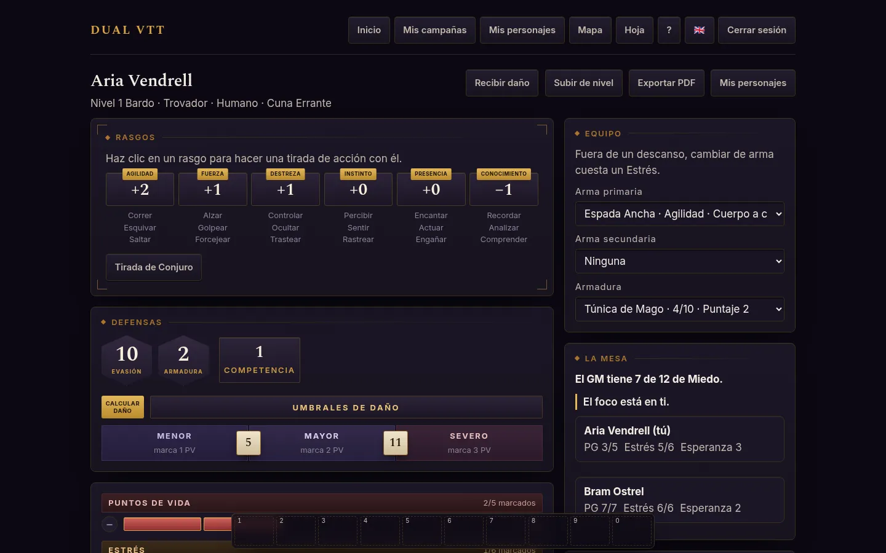
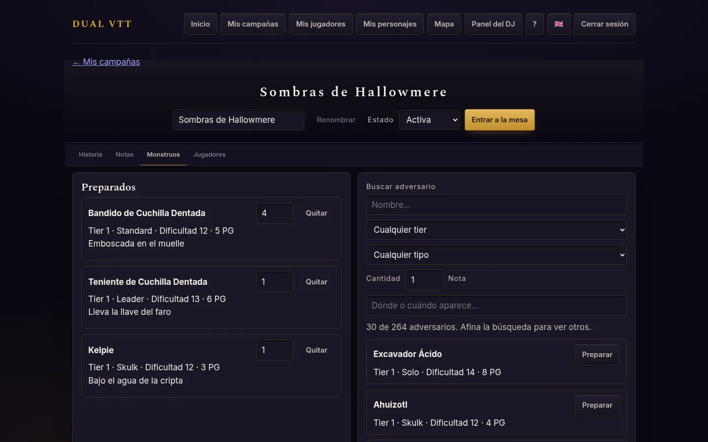
No hay un servidor público. Quien dirige descarga Dual VTT y lo ejecuta en su equipo; el resto de la mesa entra desde el navegador. There is no public server. Whoever runs the game downloads Dual VTT and runs it on their computer; everyone else joins from a browser.
NecesitasYou need
Node.js 20 o superior y pnpm. Si no tienes pnpm, instálalo con npm install -g pnpm.
Node.js 20 or newer and pnpm. Without pnpm, install it with npm install -g pnpm.
Para el DJFor the GM
-
Descarga el zip y descomprímelo, o clona el repositorio. Abre una terminal en esa carpeta.Download the zip and unpack it, or clone the repository. Open a terminal in that folder.
git clone https://github.com/CristoSolar/dual-vtt.git cd dual-vtt -
Instala las dependencias.Install the dependencies.
pnpm install -
Arranca el servidor. Compila la app y la sirve en
http://localhost:4000.Start the server. It builds the app and serves it athttp://localhost:4000.pnpm -F @daggerheart/server host -
Entra como
gm/gm; te pedirá cambiar la contraseña. En Mis jugadores crea una cuenta para cada jugador, y en Mis campañas crea la campaña e invítalos.Sign in asgm/gm; you will be asked to change the password. Under My players create an account for each player, then create the campaign under My campaigns and invite them. -
Al final de Mis campañas, pulsa Generar enlace para jugadores. Se abre un túnel de Cloudflare con una dirección pública: compártela. Dura mientras el servidor siga encendido.At the bottom of My campaigns, click Generate link for players. It opens a Cloudflare tunnel with a public address: share it. It lasts as long as the server keeps running.